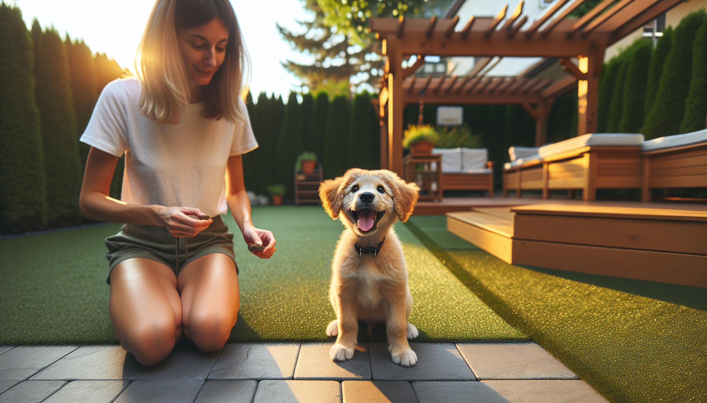

The first six months of a dog’s life are full of fast learning, big emotions, and important habits that can last for years. Whether you are raising a new puppy or helping a recently adopted rescue settle in, this stage is the perfect time to teach a few core behaviors that make everyday life safer and less stressful.
The good news is that early training does not need to be harsh, complicated, or time-consuming. In fact, the most effective dog training is built on short, consistent practice sessions, clear communication, and rewards your dog truly values. Modern behavior science shows that dogs learn best when we reinforce the behaviors we want to see more often. That means treats, praise, toys, and real-life rewards can go a long way.
So what should every dog know by 6 months? While there are many useful cues you can teach, five commands stand out because they support safety, impulse control, cooperation, and daily life at home and in public. Below, we will break down the five essential commands, explain why each one matters, and share practical training tips that work for puppies, adolescent dogs, and rescue adopters alike.
By 6 months, many dogs are still very much babies, but they are also entering a stage where curiosity, confidence, and independence start to grow. This is often when dog owners notice increased distraction, more pulling on walks, selective listening, or bursts of impulsive behavior. Teaching foundational commands before these habits become deeply ingrained can make a huge difference.
Early training is about more than obedience. It helps your dog learn how to cope with the world. A dog who can respond to basic cues is easier to guide around children, guests, traffic, other dogs, vet visits, and new environments. Training also builds trust. When your dog understands what you are asking and gets rewarded for success, you create a strong communication system and a positive relationship.
If your dog is a rescue and you do not know their exact age or history, do not worry. These same commands are still excellent starting points. Go at your dog’s pace, keep sessions short, and remember that progress is rarely perfectly linear.
Sit is often the first command people teach, and for good reason. It is simple, practical, and easy to use in daily situations. Asking your dog to sit can help prevent jumping on guests, darting through doors, or becoming overexcited during mealtimes and greetings.
From a training perspective, sit is also a great way to teach your dog that calm behavior earns rewards. Instead of reacting to chaos with more chaos, your dog begins to learn that self-control pays off.
To teach sit, hold a treat near your dog’s nose and slowly move it up and slightly back over their head. As their head follows the treat, their rear will often lower to the ground naturally. The moment they sit, mark the behavior with a cheerful “yes” or a clicker, then reward. Once your dog is offering the behavior reliably, add the verbal cue “sit” just before you lure.
For shy or sensitive rescue dogs, patience matters. Some dogs need a little extra time to understand body positioning, especially in a new home.
If you teach only one life-saving cue, make it come. A reliable recall can help prevent dangerous situations, whether your dog slips a leash, heads toward a road, or gets distracted at the park.
The key to teaching come is making it consistently rewarding. Your dog should think that running to you is one of the best choices they can make. Start in a quiet room with minimal distractions. Say your dog’s name followed by “come” in a happy tone, then move backward a few steps. When your dog comes to you, reward generously with treats, praise, or play.
Gradually increase difficulty by practicing at longer distances and in more distracting places. Use a long line outdoors for safety while you build reliability.
One common mistake is using “come” only when fun is about to end. If every recall means leaving the park, going into the crate, or ending playtime, your dog may learn to avoid you. Instead, call your dog, reward, and then sometimes send them back to play.
Leave it teaches your dog to disengage from something they want, whether that is dropped food, trash on the sidewalk, medication, wildlife, or another distraction. For puppies who explore with their mouths and rescues adjusting to a new environment, this command can be incredibly valuable.
Begin with a treat in your closed hand. Let your dog sniff, lick, or paw at it without opening your hand. The moment they pull away or stop trying to get it, mark and reward with a different treat from your other hand. This teaches your dog that backing off earns access to something better.
Once your dog understands the concept, add the words “leave it.” Over time, progress to placing a treat on the floor with your hand ready to cover it if needed, then eventually to real-life objects during walks.
Leave it is not just about obedience. It teaches your dog a valuable pattern: noticing something tempting does not mean they should rush toward it. That skill supports safer, calmer behavior in many settings.
Down is useful because it asks for a more settled body position than sit. A dog in a down is often easier to manage during meals, when guests arrive, at outdoor cafes, or during quiet time at home. It can also help energetic puppies learn to pause and regulate their excitement.
To teach down, start with your dog in a sit or standing position. Hold a treat at their nose, then slowly move it down toward the floor and slightly out. Many dogs will follow the lure and lower their elbows to the ground. The moment they do, mark and reward.
Some dogs, especially long-legged puppies or dogs who feel vulnerable lying down, may need a softer approach. Try practicing on a comfortable rug or bed and keep your tone calm and encouraging.
For rescue adopters, down can sometimes take longer if the dog is unsure of their environment. Confidence and trust often come first. That is normal.
Stay helps your dog remain in place until released. This is especially helpful at doors, curbs, during grooming, when guests enter, or anytime you need a moment of control and predictability.
Stay is best taught in tiny increments. Ask your dog to sit or lie down, say “stay,” pause for one second, then mark and reward before your dog gets up. Gradually build duration first, then distance, then distraction. Trying to increase all three at once usually leads to failure.
Use a clear release word such as “okay” or “free” so your dog understands when the exercise is over. Without a release cue, many dogs become confused about how long they are expected to hold position.
Stay is not about making your dog freeze for long periods. It is about helping them learn patience, clarity, and self-control in manageable steps.
No matter which command you are teaching, a few principles make training more effective. First, work in short sessions. For most young dogs, three to five minutes is plenty. You can do several mini sessions throughout the day instead of one long lesson.
Second, train in a low-distraction environment before expecting success in the real world. A dog who can sit in your kitchen may not yet be able to sit when another dog is passing on the sidewalk. That is not stubbornness. It is a training gap.
Third, reward what you like. Timing matters. The closer the reward is to the correct behavior, the faster your dog will learn. Use treats your dog loves, especially when teaching something new or difficult.
Finally, be realistic about age and development. Six-month-old dogs are still learning how to focus, regulate emotions, and handle distractions. Progress is not about perfection. It is about building skills and trust over time.
By 6 months, every dog should ideally be working on five core commands: sit, come, leave it, down, and stay. These cues support safety, communication, and better behavior in everyday life. They also create a strong foundation for future training, whether your goals include polite leash walking, crate training, greeting manners, or advanced obedience.
If your puppy is younger than 6 months, start now with short, positive practice. If your rescue is older or just settling in, it is never too late to begin. The most important ingredients are consistency, patience, and a training approach rooted in positive reinforcement and behavioral science.
Remember, a well-trained dog is not a robot. The goal is not blind obedience. The goal is a dog who understands you, trusts you, and can make better choices with your guidance.
Get our full Dog Training eBook series — new titles added weekly.